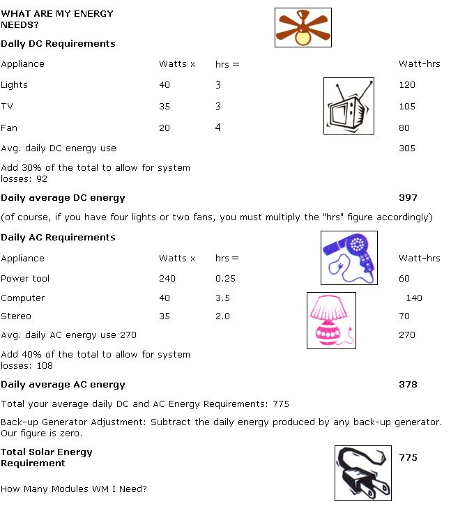
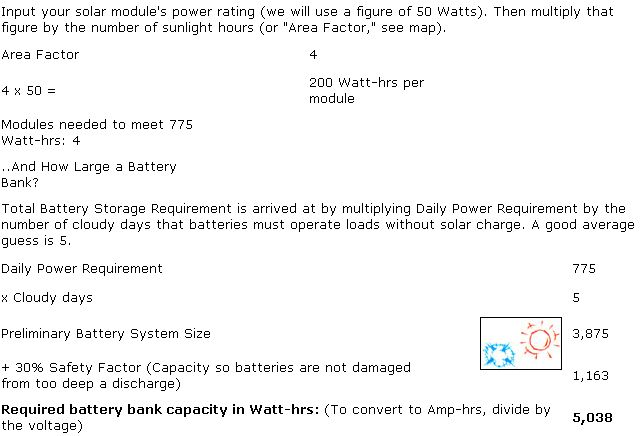
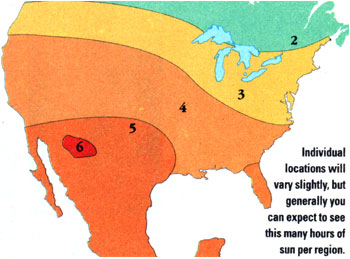
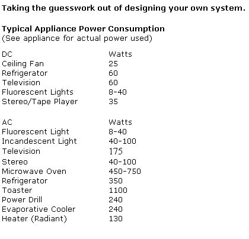

ENERGY AND ENVIRONMENT
This and other solar system information is available from Siemens Solar P. 0. Box 6932,
Camarillo, CA 93011 ( http://www.siemenssolar.com ).
Please keep in mind that every solar installations is unique and is affected by many factors, such as local weather patterns, which vary greatly even within a small geographical area.
Sizing Principles
In addition to the electricity used by appliances, the system itself also consumes some power. For example: you do not get back all the energy you put into a battery. Each day a battery is left unused (and without any additional charge), it can lose 1% to 2% of its charge, and even a properly charged battery is still not 100% efficient. An inverter also uses some energy to convert electricity from DC to AC, and voltage is lost as electricity travels through wires. To be on the safe side, system design should assume 30% DC waste and 40% AC waste.
Solar modules should be installed at the correct 'tilt-angle' to achieve the best year-round performance. Generally, this is an angle equal to the site's latitude plus 20%, with modules facing south in the northern latitudes and north in the southern latitudes.
Batteries are a major component in solar systems. A number of different types and capacities are available. Many small to medium sized systems can use photovoltaic or marine grade batteries. These are designed to be deep-cycled (discharged and recharged) many times and are generally maintenance free. They are available in capacities of about 120 Amp-hrs.
Batteries must be able to store enough energy for daily operations. A reserve should be considered so you will have additional capacity to operate the loads during anticipated periods of cloudy, sunless weather. This reserve capacity is referred to as system 'autonomy' and is rated in clays. The amount of autonomy needed varies. For critical loads such as telecommunications, you may want 10 or more days of autonomy, for a residence perhaps five days, and only a day or two for a vacation cabin.
|
 |
 |
 |
|
 |
|
|